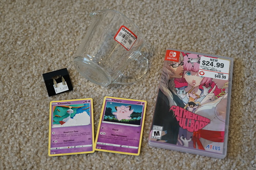

i'm not sure i mentioned it but on 6/30 i got my copies of no more heroes 1 and 2 in the mail from LRG. 2 came with a little crease in the cover. i probably wont complain tho. i love that they have booklets. publishers cheap out so bad these days.
kinda a bummer you cant get gold points off them! i like to use those...
i went out to the thrift store (and gamestop)
these are dumb and im going to wear them with my yui cosplay
its very hard to see the lines
i gotta stop buying packs and just buy a couple cuties from each set out of the binder. id save a lot of money!
i kind of bought the catherine copy because im worried about it going out of print. i was waiting for $20 but it's been out for a while now so i was getting nervous. i loooove the switch and i want all my games on it. i hate being forced to play games on the tv. i think ive played like 4 games total on ryans ps4 and ive got almost 20 switch games now.
i asked the girl at gamestop to NOT put the sticker on the game and she didnt but told me it was for return purposes like if it didnt work. like... how would you even know if it didnt work if you didnt break the seal? also idk if you've ever bought a "new" game at gamestop but that sticker is impossible to get off. my copy of yokai watch sticks to everything. give me your tips to get it off i need it. alcohol does not help!!!
this game tho is awesome. i put it in to make sure my cart did work (gamestop cashier got in my head) and now i dont wanna put it down. AND YOU CAN CHOOSE YOUR OWN CATHERINE VOICE? i picked rie kugimiya because i wanted to hear iori-chan and it is great. i beat the original catherine once so now ill get more of the endings.
and an update on my bonsai progress. i got 5/6 to germinate and then most of them died during the heat wave. there is one left. good luck buddy!